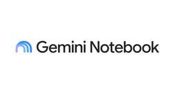
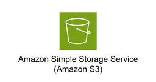
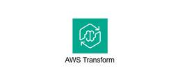
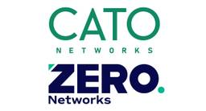

TechHarmony
https://blog.usize-tech.com
エンジニアブログ by SCSK
フィード

Gemini Notebookの痒い所に手が届く拡張機能「ExtendLM」
TechHarmony
Gemini Notebook の拡張機能「ExtendLM」についてご紹介します。 Notebookユーザーが直面する「整理の壁」 Gemini Notebook（旧NotebookLM）で、情報の収集から整理、対話に […]
3日前

【Obsidian】画像ファイルをS3へアップロードする
TechHarmony
本記事は 夏休みクラウド自由研究2026 8/6付の記事です。 SCSK永見です。 Obsidian、使ってますか？AIとの連携もしかりですが、Markdownエディタとしてもすごく重宝するソフトウェアです。 ただ、画像 […]
3日前

Azure Firewallを使用してVMからインターネットに接続してみる
TechHarmony
Azure Firewall は複雑そうなイメージを持っていましたが、実際に触ってみるとインターネット疎通であれば比較的簡単に構築できました。 本記事では、Azure VM から Azure Firewall を経由して […]
3日前

【クラスタ健全性維持の要 #2】途絶えた命綱が「分離」を招く。コミュニケーションパス設計の定石とAWS環境の最適解
TechHarmony
LifeKeeperの『困った』を『できた！』に変える！サポート事例から学ぶトラブルシューティング＆再発防止策 こんにちは、SCSKの前田です。 いつも TechHarmony をご覧いただきありがとうございます。 連載 […]
4日前

ClaudeをBedrock経由で使うための認証方法まとめ
TechHarmony
本記事は 夏休みクラウド自由研究2026 8/5付の記事です。 こんにちは。SCSKのすぐろです。 今回はClaude(CLI/Desktop)をAmazon Bedrock経由で使う際に、選択可能なAWSへの認証方法が […]
4日前

【ServiceNow】画像が破損した！？ 本番移行時の注意
TechHarmony
こんにちは！ SCSK株式会社 小鴨です。 とある日のこと 「更新セット適用できたし、カタログUIの確認でもするか、、、あれ？」 「…画像貼れてなくね？」 「………R […]
4日前

受賞者リレーインタビュー！第19弾：瀬口 慶之さん
TechHarmony
TechHarmonyエンジニアブログでは、AWS・Oracle Cloud・Azure・Google Cloud 各分野の受賞者にフォーカスし、インタビューを通してこれまでの経歴や他の受賞者に聞いてみたいことをつないで […]
5日前

過去最多570件パッチの衝撃、AI時代に「パッチ管理」から「封じ込め」へシフトすべき理由
TechHarmony
パッチ管理が限界に達成しました。フロンティアAI時代に「パッチ管理」や「検知」重視のセキュリティから「封じ込め型」重視へシフトすべき理由について解説します。 月間570件のパッチという「終わりのない徒競走」の終焉 202 […]
5日前

Ansibleを使用してNW機器設定を自動化する（FortiGate-アドレス編②）
TechHarmony
はじめに 当記事は、前回の記事「Ansibleを使用してNW機器設定を自動化する（FortiGate-アドレス編①）」からの改善となります。 設定情報がベタ書きで使い勝手が悪い点 を 設定情報をまとめてINPUT（JSO […]
5日前

Zabbix×AIで運用自動化！Zabbix主催Webセミナー登壇のお知らせ
TechHarmony
こんにちは。SCSKの新沼です。 高い柔軟性とコストパフォーマンスで世界中の企業に導入されているオープンソース統合監視ソフトウェアのZabbix。そのZabbix Japanが主催する公式ウェビナーに、今年も弊社エンジニ […]
5日前
初心者向け！DockerコンテナでZabbixサーバーを構築する手順
TechHarmony
こんにちは、SCSKの坂木です。 本記事では、DockerコンテナでZabbixサーバを構築する手順をお届けします。 コンテナ版は構築が速く、環境の複製や破棄もしやすい反面、「設定ファイルはどこ？」など通常サーバ版とは勝 […]
5日前

AWS Transform for VMwareのセッション聴講で気づいた、大規模移行を現実的に進めるための考え方
TechHarmony
こんにちは！SCSKの竹内です。 先日、幕張メッセで開催された「AWS Summit Japan 2026」で、「AIでVMware移行を加速：AWS Transform for VMware（MAM301）」というセッ […]
5日前

【2026年最新】SCS評価制度とは？概要から★取得へのロードマップ・チェックリストまで徹底解説
TechHarmony
サプライチェーンを狙ったサイバー攻撃が巧妙化・深刻化する中、経済産業省が主導する「サプライチェーン強化に向けたセキュリティ対策評価制度（通称：SCS評価制度）」の整備が進められています。 本記事では、SCS評価制度の概要 […]
5日前
Dropboxでのアクセス権限棚卸
TechHarmony
今回は、Dropboxのアクセス権限の可視化に役立つレポート機能と作成されたレポートファイルを使った診断サービスをご紹介したいと思います。 そのアクセス権限、危険です！ オンプレ・ファイルサーバでは協力会社やパートナー企 […]
6日前

【後編】WSFC × DataKeeper で SANレス・クラスターを構築してみた！
TechHarmony
こんにちは SCSK 野口です。 前回は、高可用性システムの土台となるADドメインの構築と、 WSFC（Windows Server Failover Clustering）の初期設定までをご紹介しました。 【前編】WS […]
6日前
【名古屋開催】Zabbix全国セミナー2026に出展します！「AIエージェントで運用効率化」を発表
TechHarmony
こんにちは。SCSKの後藤です。 2026年8月28日（金）、我々SCSK Zabbixチームが拠点を置く名古屋で Zabbix全国セミナー2026 in 名古屋 が開催されます！ さらに今回は、数多くのZab […]
6日前
国内大手冷凍食品メーカーのサイバー攻撃から考える、今求められる「被害を広げない」セキュリティ対策とは
TechHarmony
こんにちは！SCSKのセキュリティソリューションのマーケティング担当です。 先日、国内大手冷凍食品メーカーがサイバー攻撃を受け、冷蔵倉庫の入出庫や出荷業務に影響が発生したことが報じられました。 近年、このよ […]
6日前

AWSにおけるRocky Linux 10の採用判断と設計ポイント
TechHarmony
近年、RHELのライセンス変更の影響もあり、エンタープライズLinuxの選択肢として「Rocky Linux」に注目が集まっています。 本記事では、 ・Rocky Linuxとは何か ・Amazon Linux / RH […]
7日前

SASEとマイクロセグメンテーションで実現する完全なゼロトラスト
TechHarmony
本記事は 夏休みクラウド自由研究2026 8/1付の記事です。 殆どの企業でゼロトラストを目指されていますが、「これを買えばゼロトラストが完成する」という単一の製品やソリューションは残念ながら存在しません。ただし、より完 […]
7日前

【前編】WSFC × DataKeeper で SANレス・クラスターを構築してみた！
TechHarmony
こんにちは SCSK 野口です。 前回は「WSFC × DataKeeper」の仕組みや前提要件についてご紹介しました。 WSFC × DataKeeperについてWSFCとDataKeeperを組み合わせた「SANレス […]
9日前
【ServiceNow】環境のクローン時の除外テーブルとデータ保存
TechHarmony
ServiceNowのインスタンスをクローンする際、ソースインスタンスのデータでターゲットインスタンスのデータを上書きしたくないという時があると思います。 私が過去に体験したケースでは、本番環境から開発環境へクローンを実 […]
9日前
【ServiceNow】db_image と sys_attachment の違いと使い分け
TechHarmony
ServiceNowには画像を保存できる主な場所として、画像テーブル（db_image）と添付ファイル テーブル（sys_attachment）の2つが存在します。 どちらも画像ファイルを保持するという点では同じですが、 […]
9日前
【CSPM】Cortex Cloudでレポート発行してみた
TechHarmony
Cortexには、クラウド環境のセキュリティ状況を可視化・分析するための様々な機能が備わっており、「レポート機能」もその強力なツールの一つです。 日々変化するクラウド環境のセキュリティ状況を、ダッシュボードの画面確認だけ […]
9日前
Zabbixの外部システム(Splunk Enterprise)連携について
TechHarmony
こんにちは。SCSK小寺です。 今回はZabbixと外部システムの連携機能についてご紹介いたします。 Zabbix 6.0から追加されたコネクタ機能を使うと、監視データを外部システムにリアルタイムでストリーミング転送でき […]
10日前
【2026年最新】ランサムウェア対策の落とし穴｜正規インストーラを悪用した多層隠蔽手法を完全解剖
TechHarmony
みなさん、こんにちは。 SCSKの石井です。 BLOG更新停滞中で、複数人から次いつアップですか？とコアなFANも増えたこのごろです（苦笑） 7月。。。暑い、、関西ではもう気付けば 天神祭り（花火大会🎆）、も終わり夏開始 […]
10日前
受賞者リレーインタビュー！第18弾：山口 翔平さん
TechHarmony
TechHarmonyエンジニアブログでは、AWS・Oracle Cloud・Azure・Google Cloud 各分野の受賞者にフォーカスし、インタビューを通してこれまでの経歴や他の受賞者に聞いてみたいことをつないで […]
10日前
【Catoクラウド】Posture Check機能を活用したCMAの設定棚卸実践
TechHarmony
こんにちは、Catoクラウド担当SEの中川です。 今回はPosture Check機能の解説をしていきます！ Posture Checkとは、CMA上で設定しているポリシーや設定を評価し、Catoの推奨事項への準拠レベル […]
12日前
ストレージの「使いすぎ」からチームを守る「ユーザー別ストレージ制限」
TechHarmony
なぜ今、Dropboxのストレージ管理が重要なのか 企業でDropboxを運用する管理者が直面する課題の一つは、ファイル容量の増加です。業務ファイルに加え、動画・CADデータ・高解像度画像・バックアップデータなど、大容量 […]
12日前
次世代マイクロセグメンテーション Zero Networksとは？ネットワーク層のMFAで実現する真のゼロトラスト
TechHarmony
次世代マイクロセグメンテーション Zero Networks についてご紹介します。 マイクロセグメンテーション（Microsegmentation）とは？ まず ”マイクロセグメンテーション” とは、2013年11月に […]
12日前
Cato API (GraphQL) による設定管理・ログ集計の自動化手法と活用例
TechHarmony
こんにちは。Catoエンジニアの中山です。 今回はAPIやTerraform等のツールを使い、CatoをCMA（Cato Management Application）を使わずに運用する方法を紹介したいと思います。 普段 […]
15日前
受賞者リレーインタビュー！第17弾：八巻 綾太さん
TechHarmony
TechHarmonyエンジニアブログでは、AWS・Oracle Cloud・Azure・Google Cloud 各分野の受賞者にフォーカスし、インタビューを通してこれまでの経歴や他の受賞者に聞いてみたいことをつないで […]
16日前
【速報】Amazon Bedrock Managed Knowledge Baseが日本語対応…！？
TechHarmony
こんにちは、ひるたんぬです。 今回は前回のブログ記事でもご紹介しました、Bedrock Managed Knowledge Baseにつきまして、今までは一部正しく回答が生成できなかった日本語ドキュメントのファイル形式に […]
17日前
Cato Networks APJ Partner Summit 2026開催、SCSKセキュリティは4年連続パートナーアワード受賞
TechHarmony
2026/07/09（木）に、Cato Networks社のパートナーサミット「Cato Networks APJ Partner Summit 2026」がタイ・プーケットにて開催されました。 今年（2026年）で4回 […]
17日前
Google Cloud Next Tokyo へ出展のお知らせ
TechHarmony
皆さん、こんにちは！SCSK株式会社の大野です。 今年も、Google Cloudが主催する最大級のカンファレンス**「Google Cloud Next Tokyo ’26」**が、7月30日・31日の2日 […]
18日前
Cisco Secure Access の AI Access機能を試してみた① 〜シャドーAIの可視化・制御編〜
TechHarmony
こんにちは、SCSKセキュリティのふくしまです。 Cisco Secure Access技術ブログ第二弾として、今回はAI Access機能（シャドーAIの可視化・制御）について検証した内容をご紹介します。 第一弾ではC […]
22日前
忙しい人のための LifeKeeper for Windows v10.0 構築前に確認するチェック項目
TechHarmony
こんにちは、SCSKの伊藤です。 本記事では、前回のLinux版と同様に LifeKeeper for Windows v10 の構築前に確認しておくチェック項目をご紹介します。 Linux版の記事はこちら […]
23日前
復旧まで数ヶ月か、数日か。大手冷凍食品メーカーの事例に学ぶ、事業継続の新常識
TechHarmony
こんにちは、SCSKのマーケティング担当です。 今週、国内の大手冷凍食品メーカーのサーバーがサイバー攻撃を受け、冷蔵倉庫の入出庫や出荷業務が停止・遅延したというニュースが世間を騒がしています。 […]
23日前
【AWS Summit Japan 2026参加レポート】巨大な会場に圧倒！ 2027はどうなる！？
TechHarmony
こんにちは！SCSKの今村です。 レポが遅くなりましたが💦私も2026年6月25日（木）26日（金）の2日間、幕張メッセで開催された「AWS Summit Japan 2026」に参加してきました。 本記事では、AWS […]
23日前
mackerelでネットワーク機器監視はできる？実際に検証して分かった2つの実現方法
TechHarmony
こんにちは。SCSKの嶋谷です。 mackerelはエージェント型の監視ツールのため、ネットワーク機器のようなエージェント導入不可の機器を監視できないと思っていませんか？ ネットワーク機器のようにエージェントを導入できな […]
24日前
【AWS Summit Japan 2026】使われるAIエージェントの作り方 ～御田稔さんのセッションに学ぶ3つの工夫～
TechHarmony
はじめまして！SCSKの末光と申します。 2026年6月25日（木）・26日（金）に幕張メッセで開催された「AWS Summit Japan 2026」に参加してきました。 本記事では、会場全体で感じた技術トレンドと、特 […]
25日前
休日の障害でシステム停止？——LifeKeeperが防ぐ、見えないリスク
TechHarmony
こんにちは、SCSK 池田です。 コロナ禍をきっかけとしてリモートワークが定着(最近はオフィス回帰も聞かれますが・・・)しましたが、セキュリティの観点で、特に個人情報を扱うシステムの運用保守では、オフィスからのシステム接 […]
1ヶ月前
【現地レポート】Zabbix全国セミナー2026 in 札幌に参加してきました！
TechHarmony
こんにちは、SCSKの坂木です。 2026年7月10日（金）、札幌で開催された Zabbix全国セミナー2026＜札幌会場＞ に参加してきました！ 今回は、SCSKから 中野 祐輔氏が 【Zabbix × AI】AIエー […]
1ヶ月前
受賞者リレーインタビュー！第16弾：松渕 健太さん
TechHarmony
TechHarmonyエンジニアブログでは、AWS・Oracle Cloud・Azure・Google Cloud 各分野の受賞者にフォーカスし、インタビューを通してこれまでの経歴や他の受賞者に聞いてみたいことをつないで […]
1ヶ月前
Cato エンタープライズブラウザとは？～設定・検証してみた～
TechHarmony
様々な事情（委託先のPC、BYOD等）で存在する「業務で使用するが、会社が管理していないデバイス」への対応には、各企業が頭を悩ませていると思います。 上記のようなデバイスは誰かの私物であったり、他社の資産であることから、 […]
1ヶ月前
Kong連載第4回 生成AIの企業利用を安全に。マルチLLM時代を制する「Kong AI Gateway」の実力
TechHarmony
こんにちは。SCSKの石田です。 Kong連載記事の第4回をお届けします。 前回の第3回では、インフラ運用の負担を劇的に軽減し、セキュアなハイブリッド環境を実現するSaaS型管理基盤「Kong Konnect」について解 […]
1ヶ月前
【AWS Summit Japan 2026 参加レポート】 ～業務・運用を変える2つのAIエージェント～
TechHarmony
はじめまして！SCSKの後藤です。 2026年6月25日・26日の2日間、幕張メッセで開催された「AWS Summit Japan 2026」に参加してきました。AWS Summitは、AWS（Amazon Web Se […]
1ヶ月前
Snowflakeのエージェント評価機能を触ってみた ～Snowflake CoWorkのテスト自動化へ～
TechHarmony
こんにちは、SCSK斉藤です🐧 SCSKでは現在、社内のデータ活用基盤としてSnowflakeを採用しており、Snowflake CoWorkの利用についても検証を行っています Snowflake Intelligenc […]
1ヶ月前
【連載 Dropboxのキホン 第2回】Dropboxの『選択型同期』活用術：PCが重い・容量不足を解決！
TechHarmony
第1回では『デスクトップアプリのインストール方法』について解説しましたが、今回はさらに一歩進んで、多くのユーザーが悩む『PCのストレージ容量問題』を解決する「選択型同期」機能に焦点を当てます。 本記事では、Dropbox […]
1ヶ月前
Claude Code に要望を伝え続けたら数時間で3Dゲームが完成した話
TechHarmony
コードを1行も書かず、アセットも買わず、2日で3Dゲームができました。 やったことは「こうして」「ああして」とレビューしていただけ。 使ったツールはClaude Codeだけ。 自然言語で指示を出し続けたら、Godotで […]
1ヶ月前
AWS Summit Japan 2026参加レポート ～AIエージェントとAWS DevOps Agent～
TechHarmony
はじめに はじめまして！SCSKの長谷川です。 今回AWS Summit Japan 2026に参加してきたため、イベントレポートを書かせていただきます！ 私はこれまでAWSに少し触れた経験はあるものの、AWS Summ […]
1ヶ月前